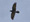
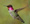

This compliation is an outgrowth of Wendy Petschik's
Birding Class in the KSC CALL program during the Spring of 2011 and
will include selected material from prior classes and additional entries
of interest. |
|||||||
| Internet Birding Sites | |||||||
| All About Birds - Cornell All About Birds is created by the staff of the Cornell Lab of Ornithology. It’s our aim to make this site the Web’s best and most comprehensive resource for North American birds | |||||||
| WhatBird.com The Whatbird.com search engine is used to identify birds of North America. What makes this engine so special is that it uses a parametric step-by-step approach to identifying birds. | |||||||
| IBC The Internet Bird Collection has a wealth of bird descriptions, sounds, and videos. | |||||||
| Why Birds Sing Why Birds Sing is the first introduction to the world of bird song that combines the insights of science, poetry, and music. | |||||||
| The
Suthers Laboratory Interesting links on the neural basis
of behavior, particularly the neuroethology of acoustic communication. |
|||||||
| Bird Group | Bird Name | Video | Call | Notes [size, markings, location] | |||
| Chippers & Trillers | Chipping Sparrow |  |  | rapid dry trill; chip--chip-chip-chip-chip | |||
| Dark-eyed Junco | dit, tsick, tchet | ||||||
| Pine Warbler | zhe-zhe-zhe-zhe-zhe...; tsup | ||||||
| Swamp Sparrow | peat-peat-peat-peat-peat-peat-peat, zeee, chip | ||||||
| Complex Vocalizations | American Goldfinch | potato chip - potato chip,... | |||||
| Boblink | spink-spank-spink-bobolink; bubble-tinkle-tinkle... | ||||||
| House Wren | scolding chatter; bubbly song bursts | ||||||
| Mimics | Northern Mockingbird | chack | |||||
| Brown Thrasher | plow it-plow it-sow it-sow it-reap it-reap it-swawk | ||||||
| Gray Catbird | mew, mew, chack | ||||||
| Name Sayers | Blue Jay | jeer, jay - jay; clear whistled notes & gurgling sounds; cleeeal - cleeeal | |||||
| Black-Capped Chichadee | chickadee -dee- dee- dee-dee; fee-bee; hey sweetie | ||||||
| Eastern Phoebe | FEEbe - FEEbe - FEEbe; fee -b -lee | ||||||
| Eastern Wood Pheobe | pee-oo-wee; pee -ee | ||||||
| Paraphrased Songs | Tufted Titmouse | peter-peter-peter; chiva -chiva -chiva | |||||
| White-Throated Sparrow | oh sweet Canada Canada Canada; old sam peabody... | ||||||
| Common Yellowthroat | witchity - witchity - witchity...; which is it, which is it... | ||||||
| Eastern Towhee | drink your teeeea... | ||||||
| Yellow Warbler | sweet sweet sweet sweeter than SWEET | ||||||
| Black-Throated Green Warbler | zee zee zee zoo zee; trees - trees -murmuring trees | ||||||
| Chestnut-sided Warbler | very very verty pleased ta-MEET cha | ||||||
| Song Sparrow | Madge, Madge, Madge pleeeease put on the teakeettle | ||||||
| Ovenbird | TEACH er, TEA cher, TEACH er | ||||||
| Simple Vocalizations | White-breasted Nuthatch | yank - yank ; upside down on trees. | |||||
| Red-breasted Nuthatch | yank - yank; ank-ank; tiny tin horn | ||||||
| Common Raven | gurgling croak; cr-r-ruck | ||||||
| American Crow | caw, caw, caw | ||||||
| House Sparrow | dry non-musical chirps | ||||||
| Song Singers | American Robin | cheerio - cheery me; cheerio - cheerie; cheer-e-up - cheerio - cheerie | |||||
Rose-breasted Grosbeak |
Cheery, cheerio, cheer-up; cheerily, cheer-up, cheerily | ||||||
Red-eyed Vireo |
here-I-am, look-at-me, where-are-you; high pitched repetitous 6.0; grey cap & black-bordered white eyebrow stripe; woodlands, shade |
||||||
| Thrushes | Wood Thrush | ee-o-lay | |||||
| Veery | vee-ur, vee-ur, veer,veer 6.5-7.5; warm brown, ghost-like; mixed woodlands, streams |
||||||
| Hermit Thrush | tuck - tuck -tuck | ||||||
| Warbling Songsters | House Finch | scritchy scritchy screer, scritchy screer-treee | |||||
| Purple Finch | rich, musical warble. Call is a distinctive "tick" in flight. | ||||||
| Whistlers | Northern Cardinal | purty, purty, purty | |||||
| Woodpeckers | Downy Woodpecker | decending whinny. Call: a flat pik | |||||
| Hairy Woodpecker | low even pitched rattle Call: loud, sharp peek | ||||||
| In-Near Water | Bald Eagle | kleek-kik-ik-ik, kak-kak-ka | |||||
| Osprey | chewk-chewk-chewk | ||||||
| Kingfisher | rattle | ||||||
| Common Loon | oo-AH-ho, kee-a-re | ||||||
| Hooded Merganser | crrrroooo | ||||||
Note:
Updated April 21, 2011 and subject to change without notice... |
|||||||